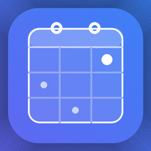
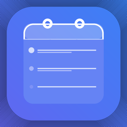

PayForge
Salary, shift, tax, and quick pay estimation tools for understanding what upcoming work may be worth.
Forge software suite
Forge brings pay estimation, shift planning, and workflow tracking into a focused iOS-first suite designed to feel fast, calm, and native.

ForgeShiftPlan shifts with pay-aware structure.
ForgeTrackKeep important work signals visible.Dedicated apps
Each Forge app focuses on a specific part of work life while sharing the same clean, privacy-minded approach.
Salary, shift, tax, and quick pay estimation tools for understanding what upcoming work may be worth.
Shift planning, logging, and pay-aware scheduling workflows for people who need more than a basic calendar.
Tracking and workflow tooling that helps keep your Forge setup organised across recurring tasks and activity.
View ForgeTrackNative by default
This support site follows your device system appearance automatically, matching the native Forge apps more closely.
Soft transparency, layered highlights, and blurred panels create a modern iOS-style feeling without sacrificing readability.
Product pages, FAQs, legal links, and a guided contact form give App Store reviewers and customers clearer routes to help.
Help centre
Use the contact page to include the app name, your device, iOS version, and a clear description of what happened.
Subscriptions are handled by Apple. You can manage or cancel via iPhone Settings > Apple Account > Subscriptions.
We aim to respond within 2 business days.